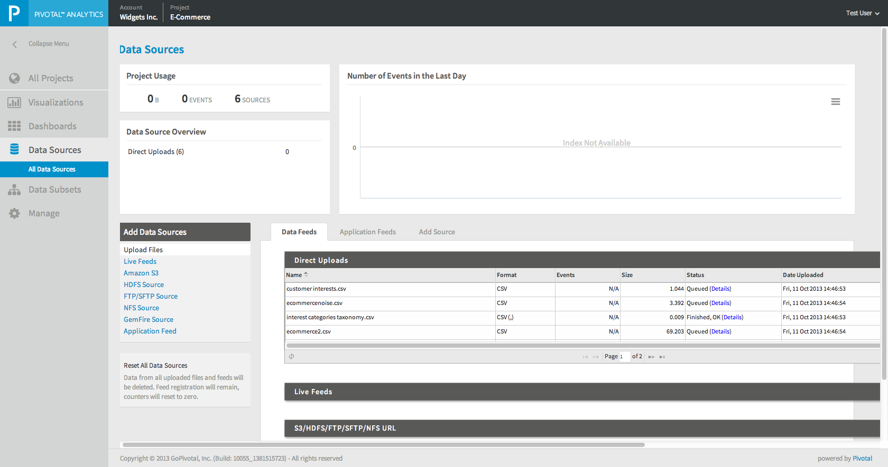
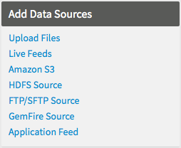
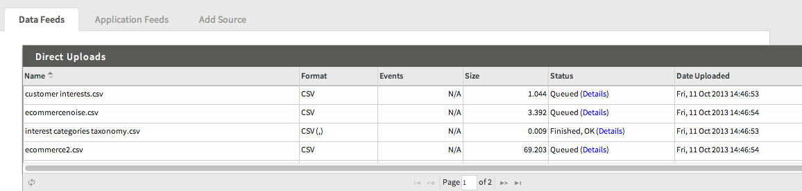

About Data Sources
Pivotal Analytics Data Sources define the set of data you want to analyze. You define one or more data sources for each Pivotal Analytics project. (For more information about Pivotal Analytics projects, see Managing Projects.) Data sources can consist of static files from a variety of sources and it can include live data feeds from applications, log data, and other messages. The procedures for loading these various types of data are discussed in this chapter. Although you can likely work directly with existing data sources, your business requirements may require that the data be manipulated by filtering, normalizing or eliminating unneeded data dimensions before being submitted to the Pivotal Analytics system.
When you submit a data source for processing, Pivotal Analytics analyzes and indexes the data using the configured Pivotal HD Hadoop cluster. Once this process is complete, you can begin to use Pivotal Analytics to visualize and analyze your data.
Data Sources Page
The Data Sources page is where you add and manage the data sources for your Pivotal Analytics project.
To view the Data Sources page:
- Login to Pivotal Analytics.
- Select Data Sources from the left menu.

The Data Sources page displays an overview of the data sources configured for the current project. You can see at a glance, the number of events processed in the last day and detailed information on each data source you have configured. Click the Application Feeds tab to see information about your application feeds.

Data Upload Formats
Depending on which type of data source you are processing, you can use one of the following data formats to add data sources:
| Data Format | Description |
|---|---|
| Autodetect | Automatically discovers the format of your data among all currently supported formats, or combinations of formats (including many not explicitly shown in the list ?? true?). |
| Apache CLF | Select this format for data compliant with the Apache Common Log Format, or the Apache Combined Log Format. |
Avro | Select this format for data generated by the Avro framework. Avro is a serialized data communication format used by Hadoop. |
| CSV (no header) | Select this format for data formatted as Comma Separated Values or, more generally, Delimiter Separated Values, where the "delimiter" can be any character frequently used as a separator (e.g., a comma or tab). When you select CSV, the following additional options display:
|
| Excel | Select this format to upload files in Microsoft Excel format. The files should be basic spreadsheets that do not contain graphics and have a well-formed row and column structure that can be exported to the CSV format. The first row of the worksheet should contain field names for the columns. You can upload an Excel workbook file that contains multiple spreadsheets. Each spreadsheet is processed as a separate file. |
| OpenTSDB | Select this format for time-series data that uses the OpenTSDB format of Hadoop Hbase. |
| Syslog (standard) | Select this format for data compliant with the Syslog format, as specified in RFC 3164. |
| Syslog (updated) | Select this format for data compliant with the updated Syslog format, as specified in RFC 5424. ?? only one syslog entry in dropdown. |
| Log4j | Select this format for data compliant with the Apache Log4j format (using any of the many predefined patterns supported). |
| JSON | Select this format for data compliant with the JavaScript Object Notation (JSON) format. |
| TEXT | Select this format for unstructured textual data. |
| vShield | Select this format to upload log files from VMware vShield Servers. |
| XML | Select this format for XML-formatted data. |
The data processing applied to your data source is driven by the Data Format you select. If you specify a data format for a file that is not compliant with that format, the data is still processed, but with much less accuracy, depending on your actual selection.
Treating file contents as single-line events
For the CSV, JSON, and TEXT data sources, de-select the Treat file contents as single-line events if your data spans multiple lines.
When checked, input files processed using MapReduce inside Hadoop are initially split into multiple sub-files and each sub-file is processed independently for parallelization. The splits occur using a newline as the event/record boundary. Although this is correct in most formats such as CSV and single-line JSON, this will not be correct in cases where events/records span across multiple lines.
About Compressed Files
You can upload your files as uncompressed plain text, or as compressed data in any of the following formats (or their common combinations):
BZIP2(bz2)GZIP(gz)JARLZOZIPTAR- GZipped
TAR(.tar.gz)
Note the following regarding compression:
- To upload compressed archives containing files in different formats (any of the supported formats, as listed above), use the Autodetect option.
- If you select any a data format (any available option other than Autodetect), all the files in the compressed archive are processed as compliant with that format.
- The compression format of each file is automatically detected according to the file's contents, therefore you can use any file name or extension.
?? keep this?? If the data or compression format of your file is not identified by the "Autodetect" option, or is not explicitly listed above, or for any other related issue, please contact us at support@cetas.net for further options.
Extraction and Data Quality Rules
When prompted, choose one of the following Extraction and Data Quality Rules:
- Retain raw event—In addition to normal processing, raw events are also retained "as is" (only useful if you plan to do searches on original events).
- Enable Data Quality Control—You can include or exclude events using a regular expression. When you select this option, two text boxes display where you can enter text to either drop or accept events that match the expression. Select the the radio button to Accept or Drop events.
- Field Extraction Rules—You can extract data from a data set into a new file using a regular expression. Enter values for the name of the field and the expression and click Add Rule. You can add multiple rules.
Update Rules
When prompted, select one of the following Update Rules:
- Regular—New data is added to the end of the existing data and does not update or replace previously loaded data. If the data source name exactly matches the name of a previously loaded data source, all data is replaced with the new data.
- Update—If the keys match, the old data is updated with the new data in the upload. A text box display where you can define one or more key fields. Click Add another key to enter a additional keys. Click the minus sign to remove a key.
Scheduling Options
The following options are available when scheduling data sources:
- Run-immediately—upload the file now, and do not repeat the upload
- Hourly—upload the file every hour or at an interval of hours that you specify. A set of fields display to schedule when and how often the upload occurs. You can also specify a start and end date.
- Daily—upload the file every day or at an interval of days that you specify. A set of fields display to schedule when and how often the upload occurs. You can also specify a start and end date.
- Weekly—upload the file every week or specify an interval of weeks. You can also specify the day of the week when the upload occurs. A set of fields display to schedule when and how often the upload occurs. You can also specify a start and end date.
- Monthly—upload the file every month or at an interval of months that you specify. A set of fields display to schedule when and how often the upload occurs. You can also specify a start and end date.
Adding Data Sources
To begin adding data sources:
Login to Pivotal Analytics and click Data Sources in the left menu.
The Add Data Sources menu displays:
- Follow the procedures below to add any of the following data sources:
Upload Files
The Upload Files data source allows you to directly upload files from your local machine.
To upload files:
- Login to Pivotal Analytics.
- Select Data Sources from the left menu.
- Click Upload File from the Add Data Sources menu.
- Select the Add Source tab
- Drag and drop one or more files into the grey box or click Choose Files to open a file browser.
The file uploads to Pivotal Analytics and displays a progress meter. When the upload is complete you will see a green checkmark icon and the file uploaded message. - After the files upload, click Next.
- Select a data format and type, or select Autodetect. You can choose any of the data formats listed in the Data Upload Formats table.
- Click Next.
- (Optional) Select an Extraction and Data Quality Rules option
See Extraction and Data Quality Rules. - Click Next.
- Select an Update Rule.
See Update Rules. - (Optional) Click Preview to view the data set you are loading.
- Click Done.
The data uploads and processing begins. You can view the status of your uploads on the Data Feeds tab.

Click Details for additional status information.
Click the Trash icon to delete the data source.
Click the red Stop icon to stop processing the data.
When the processing of the uploaded file is complete, a notification displays.
Live Feeds
The Live Feeds data source option allows you to stream data from log files in formats such as log4j or JSON.
To add a Live Feed data source:
- Login to Pivotal Analytics.
- Select Data Sources from the left menu.
- Select Live Feeds from the Add Data Sources menu.
- Enter a name for the data source in the Source Name field.
- (Optional) Select an Extraction and Data Quality Rules option
See Extraction and Data Quality Rules. - Click Next.
- Select an Update Rule.
See Update Rules. - (Optional) Click Preview to view the data set you are loading.
- Click Done.
Amazon S3
You can add data sources that are stored in Amazon S3 cloud storage service. Before configuring an S3 data source, you must obtain the following information from your S3 environment:
- Access Key
- Secret Key
- S3 Root URL
To add an Amazon S3 data source:
- Login to Pivotal Analytics.
- Select Data Sources from the left menu.
- Select Amazon S3 from the Add Data Sources menu.
- Enter your Access Key, Secret Key
- Enter your S3 URL or click browse to locate the URL.
- Click Next.
- Select a data format from the drop-down list or select Autodetect. See Data Upload Formats.
- (Optional) Select an Extraction and Data Quality Rules option
See Extraction and Data Quality Rules. - Click Next.
- Select an Update Rule.
See Update Rules. - (Optional) Click Preview to view the data set you are loading.
- Click Next.
- In the Repeats drop-down list, select a schedule option. Your file will upload automatically using the schedule you specify. See Scheduling Options.
- If you selected a scheduling option other than Run-immediately, select Incremental Processing to load only new data.
- Click Done.
The data uploads and processing begins. You can view the status of your uploads on the Data Feeds tab.
HDFS
To add data stored in a Hadoop File system:
- Login to Pivotal Analytics.
- Select Data Sources from the left menu.
- Select HDFS from the Add Data Sources menu.
- Select the type of Hadoop distribution where your data is stored. Chose one of the following options:
- Pivotal Hadoop Distribution 1.0
- Cloudera Distribution for Hadoop 3
- Cloudera Distribution for Hadoop 4
- Enter the HDFS root URL.
- Select the Hadoop Processing option to process the data on the Hadoop cluster where the data source resides. If you do not select this option, processing occurs only on Pivotal Analytic nodes, which may reduce performance.
- Select the Auto Summarize option to ?? Individual events will not be indexed, but the resulting metadata size will be much smaller.
If not checked, individual events will be indexed and will require provisioning of sufficient storage for metadata. - Select a data format from the drop-down list or select Autodetect. See Data Upload Formats.
- ?? the Treat file contents as single-line events option is available. De-select this option if your data spans multiple lines. ??is that right?
- (Optional) Select an Extraction and Data Quality Rules option
See Extraction and Data Quality Rules. - Click Next.
- Select an Update Rule.
See Update Rules. - In the Repeats drop-down list, select a schedule option. Your file will upload automatically using the schedule you specify. See Scheduling Options .
- Click Done.
FTP/SFTP
To upload data from files stored on FTP or SFTP sources:
- Login to Pivotal Analytics.
- Select Data Sources from the left menu.
- Select FTP/SFTP from the Add Data Sources menu.
- Select the type of file transport from the FTP/SFTP drop-down list, either FTP or SFTP.
- Enter the Username for access to the FTP or SFTP account.
- Enter the Password for access to the FTP or SFTP account.
- Enter the FTP Root directory URL or click the Browse button to browse to the directory.
- Select a data format from the drop-down list or select Autodetect. See Data Upload Formats.
- (Optional) Select an Extraction and Data Quality Rules option
See Extraction and Data Quality Rules. - Click Next.
- Select an Update Rule.
See Update Rules. - In the Repeats drop-down list, select a schedule option. Your file will upload automatically using the schedule you specify. See Scheduling Options .
NFS
To upload data files stored on NFS sources:
Login to Pivotal Analytics.Select Data Sources from the left menu.Select NFS Source from the Add Data Sources menu.Enter the Password for access to the FTP or SFTP account.Enter the NFS Root directory URL or click the Browse button to browse to the directory.Select a data format from the drop-down list or select Autodetect. See Data Upload Formats.(Optional) Select an Extraction and Data Quality Rules option
See Extraction and Data Quality Rules.Click Next.Select an Update Rule.
See Update Rules.In the Repeats drop-down list, select a schedule option. Your file will upload automatically using the schedule you specify. See Scheduling Options .
GemFire
You can add a data sources that retrieves data from a (Pivotal vFabric??) GemFire region. Consult the GemFire documentation for more information about data access in GemFire.
- Login to Pivotal Analytics.
- Select Data Sources from the left menu.
- Select GemFire Source from the Add Data Sources menu.
- Enter a name for the source (for internal reference only) in the Source Name field.
- Enter the host name of the GemFire installation in the GemFire Server Host field.
- Enter the port number of the GemFire installation in the GemFire Server Port field.
- Select the type of query from the following options:
- Continuous Query—Enter a query string for a GemFire continuous query.
- One Time Query—Enter a query string for a query that is performed immediately.
- Register for Events by regular expression—Enter a Region Name and a Regular Expression
- In the Repeats drop-down list, select a schedule option. Your file will upload automatically using the schedule you specify. See Scheduling Options .
- Click Done.
Application Feeds
You can add data from running applications by coding those applications to send event messages to Pivotal Analytics. You define a data source in Pivotal Analytics and the system provides you with snippets of application code you can embed in your applications to send the event messages. Code is available for the following environments:
- JavaScript API—Use the Pivotal Analytics JavaScript API to write code that tracks the data you want to analyze.
- JavaScript Page Visit event—Use this option to track page views. Event data includes URLs visited, Page Title, Session Analysis, screen resolution, browser, and operating system information.
- JavaScript Page DOM Click Event—Use this option to track mouse click events.
- JavaScript eCommerce Event—Use this option to track ecommerce activities. Event data includes shopping carts, products, and custom variables.
- JavaScript Game tracking event—Use this option to track user activites while playing a game, for example, advancing levels, invitations to friends, and purchasing of virtual goods.
- JavaScript User action event—Use this option to track user actions on a site.
- JavaScript Custom event—Use this option to track custom events that you define.
- REST API—You can write custom code using a REST API to send application events to Pivotal Analytics.
To configure an Application Feed:
- Login to Pivotal Analytics.
- Select Data Sources from the left menu.
- Select Application Feed from the Add Data Sources menu.
- Enter a name for the application feed in the Application Name field.
- Enter the URL of the application in the URL field.
- (Optional) Enter a description of the application in the Description field.
- Select the type of application. (?? WHAT ARE IMPLICATIONS OF EACH? )You can choose from:
- WEB
- MOBILE
- DESKTOP
- UNKNOWN
- Click Next.
- Select an Update Rule.
See Update Rules. - Click Done.
The Application Details screen displays. - Select the JavaScript tab and and event type to copy application tracking code for any of the listed events. You can paste this code into your application. Select the REST API tab for information about adding Web services code using the REST API. You can also access the API key from this page.
- (Optional) Click Preview to preview the data from the application feed. ??really?
Data Ingestion APIs
The Data Ingestion APIs are provided in the form of either a set of SDKs for various languages or RESTful APIs for integration of any client that can follow the RESTful API model. A summary of the APIs that can be used for ingestion are listed below (click on the corresponding link for more information):
Resetting Data Sources
You can reset all data sources so that the indexes are cleaned up.
To reset data sources:
- Login to Pivotal Analytics.
- Select Data Sources from the left menu.
- Click the Reset All Data Sources link.
{kind=link}
{kind=link}
{kind=link}
{kind=link}
{kind=link}
{kind=link}
{kind=link}
{kind=link}
{kind=link}
{kind=link}